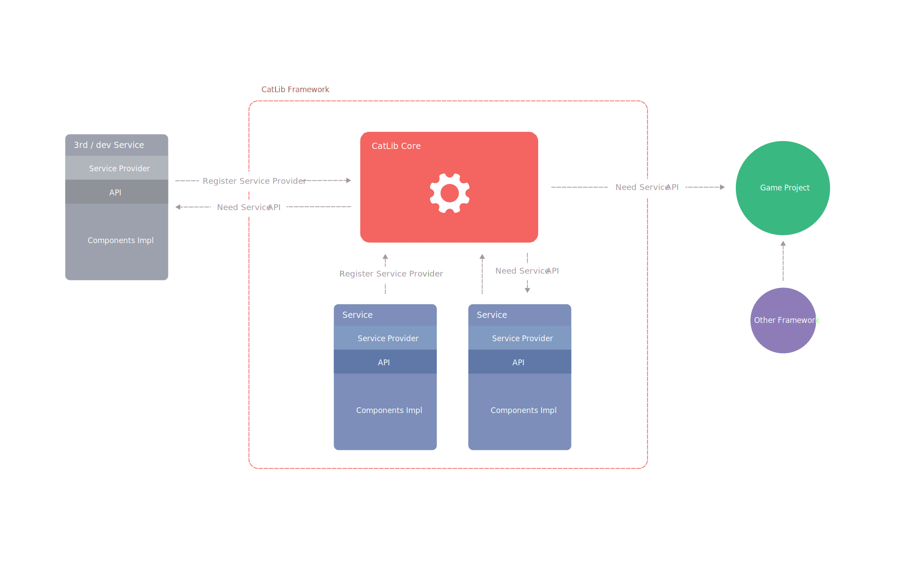

The service provider is the bridge between the Component and the CatLib. It is also the center of CatLib startup, and all services are defined by service providers.

Service providers are used to describe how a service provides services to users. These relationships often include whether the service is a singleton, how the service is initialized after it is built, and so on.
A service provider is just a management tool. Use a service provider to guide or manage your components so that components can be combined and collaborated with each other. Please give full play to your imagination!
Some people may criticize. I understand that a simple function has to implement such a large circle of functions, which means that the code is too long. You must define the interface and implement it, and then register with the service provider. How much code to knock on!
For small and simple programs, there is nothing wrong with the above statement. In simple functions, the interface is usually unnecessary. It is also possible to couple the code to a place that you think will not change, such as a one-time task, or Some prototypes or demo projects, after all, this flexibility will bring more code.
Sometimes it does not change. And small programs don’t require architects, and architects serve large projects.
In large projects, the interface is very helpful. Compared with the improved code flexibility and testability, the time it takes to knock a few more keyboards is negligible.。
If you don’t want to follow the interface principle when writing a small program, go back to the original mode, don’t think there is any problem, then there is nothing wrong with it. But you have to make an assessment of the drawbacks it brings.
Your service provider class must implement the IServiceProvider interface, which contains Register and Init methods.
In the Register method, the only thing you need to do is to bind the service implementation to the service container. Don’t try to perform any other functions in it, otherwise a CodeStandardException exception will be thrown.
1 | public class ProviderFoo : IServiceProvider |
The Init method will be executed after the execution of the Register method of all service providers, which means that we can access the services provided by other service providers in Init method.
1 | public class ProviderBar : IServiceProvider |
You can also simplify the way service providers are built by inheriting ServiceProvider:
1 | public class ProviderFoo : ServiceProvider |
If the user of the framework wants to use a service, then the service must be registered first:
1 | App.Register(new ProviderFoo()); |
Registering a service provider does not mean that the service will be instantiated immediately. Usually, many are de-instantiated and instantiated only when they are actually used.
与"{{ searched.keyword }}"相关的内容{{searched.results.length}}条
无搜索结果可以匹配"{{ searched.keyword }}"